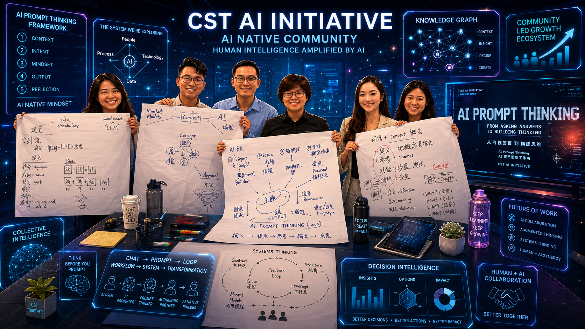
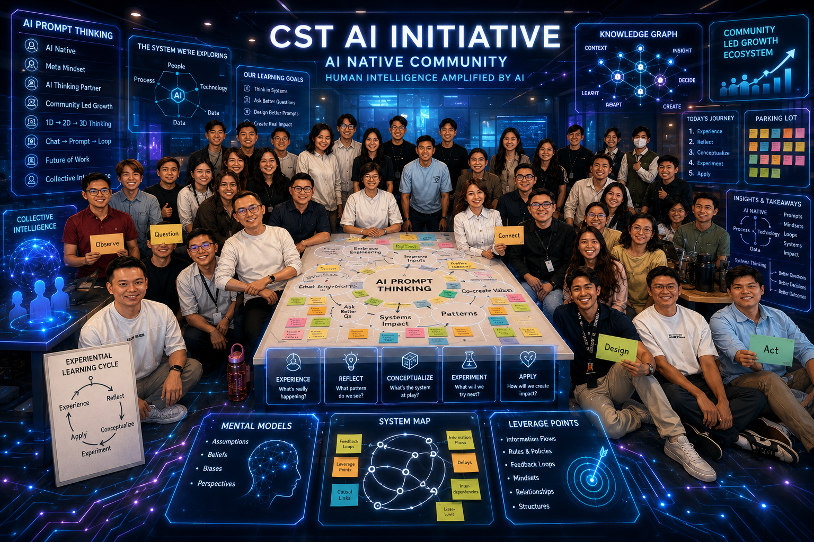

Chat
Explore AI through questions and responses.
CST AI INITIATIVE · AI PROMPT THINKING
AI Prompt Thinking develops the ability to structure context, ask better questions, challenge assumptions and work iteratively with AI.
CHATReactive answers
PROMPTStructured context
LOOPIterative thinking
AI THINKING PARTNER01 · THE SHIFT
The objective is not to collect clever prompt templates.
It is to learn how to frame a situation, communicate context, test an answer, recognise limits and build a more useful thinking loop.
02 · THE PRACTICE MODEL
Explore AI through questions and responses.
Structure purpose, context, constraints and output.
Critique, refine and think iteratively with AI.
Connect repeated thinking into useful work.
AI Prompt Thinking is not a library of magic instructions. It develops habits that remain useful as tools continue to change.
Give AI the situation it needs to reason usefully.
Ask questions that expose assumptions and alternatives.
Use feedback loops instead of accepting the first answer.
Keep responsibility, discernment and decisions with people.
03 · LEARNING IN PRACTICE
Selected visual concepts from the evolving CST AI learning experience—showing collaborative thinking, systems mapping and applied practice.


AI-assisted visual concepts created for CST programme communication. They represent the intended learning experience and are not documentary photographs.
03 · CHOOSE YOUR LEARNING PATHWAY
Choose the depth that fits your present role and challenge. Contact CST for the latest schedule and delivery details.
For anyone beginning to think and work more meaningfully with AI.
Suggested for leaders who need to apply AI thinking across decisions, people and work.
Suggested for C-level leaders shaping decisions, teams and self-organising learning communities.
Programme availability, dates and delivery format are confirmed directly with CST. “FOC for Chimps” applies to eligible active Chimpanzee Ka-Ku Society members.
04 · FULL COURSE CURRICULUM
Each module builds on the last, creating a cumulative system of thinking tools that participants can apply immediately in their work context.
Before solving a problem, we must articulate it precisely. 3A+P provides a structured way to construct a situation, conversation or prompt.
Move beyond managing symptoms. Learn to diagnose organisations, teams and challenges as living, dynamic systems.
Learn where high-impact change actually lives, from visible structures and information flows to goals, mindsets and paradigms.
05 · CHIMPS-ONLY ADVANCED MODULE
The 5-Day Course moves beyond rehearsed answers. Participants bring genuine workplace or strategic dilemmas into a facilitated, structured decision process.
06 · CHIMPS-ONLY ADVANCED MODULE
The final module asks how learning continues when formal training ends.